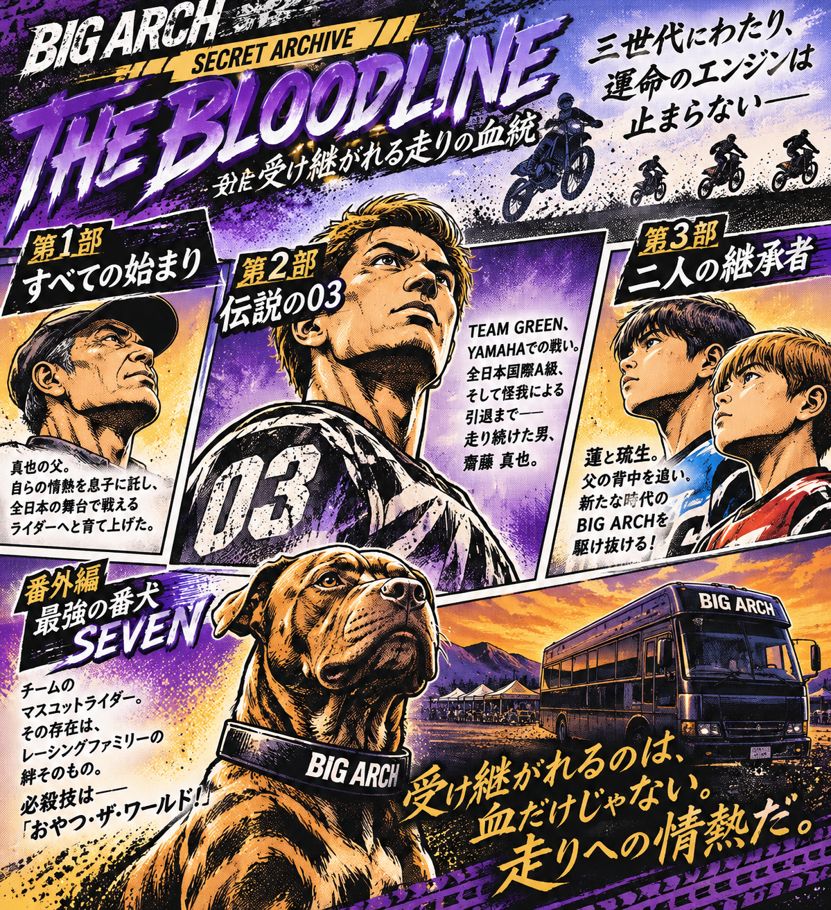

BIG ARCH / SECRET ARCHIVE
THE BLOODLINE
受け継がれる走りの血統。三世代にわたり、運命のエンジンは止まらない。

第1部｜すべての始まり
父が息子に託した、モトクロスへの情熱。
第2部｜伝説の03
TEAM GREENからYAMAHAへ。国際A級で挑んだ日々。
第3部｜二人の継承者
蓮と琉生。新たな時代のスタートラインへ。
番外編｜SEVEN
チームの最強マスコット、ここに参戦。
受け継がれるのは、血だけじゃない。
走りへの情熱だ。
※イラストはイメージ表現であり、人物の実際の容姿・車両・当時の写真を正確に再現したものではありません。